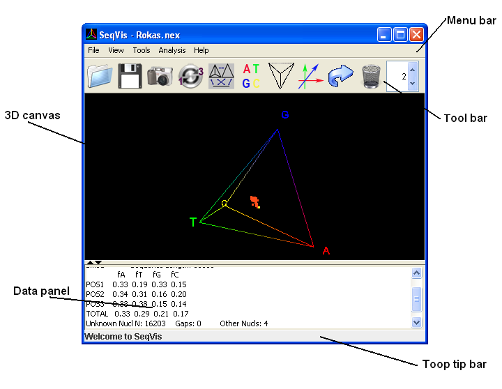

Graphical User Interface (GUI) of SeqVis

- Menu bar: Contains all system's functionalities, categorized by type.
- Tool bar: Contains buttons for commonly used functionalities, including file open/save,
screen capture, toggle between whole sequence/codon view, lower dimension views, toggle visibility of
labels/wireframe/axes, animation, and delete points.
- 3D canvas: An interactive 3D visualization frame. Mouse action includes:
- drag when left button pressed: rotation
- drag when right button pressed: translation
- drag when middle button pressed: zoom
- press CTRL on keyboard and press right button: popup menu
- Data panel: Displays details of the selected data point on the screen (as coloured in yellow). It
displays the sequence name, total sequence length, frequency of A,T,G,C in across all codon site, and a count
of other nucleotides.
- Tool tip bar: Shows tool tips of each GUI component when placing mouse over them.